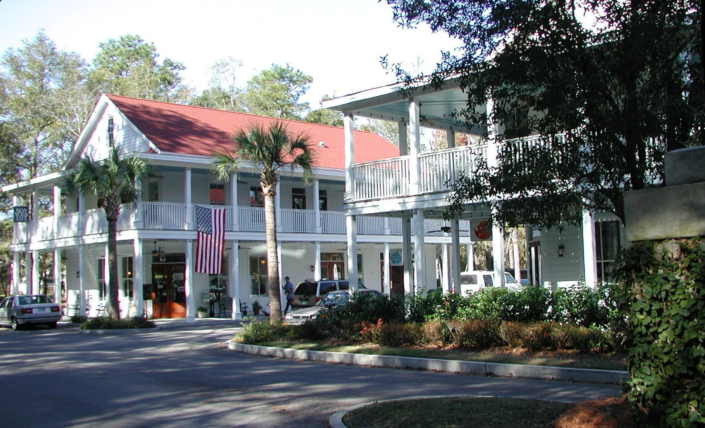
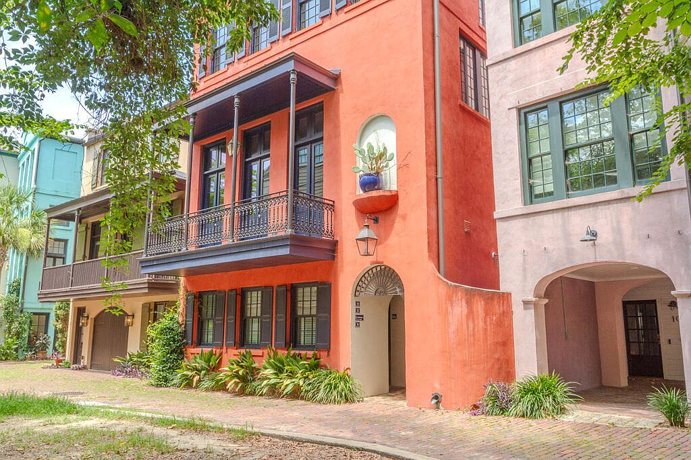
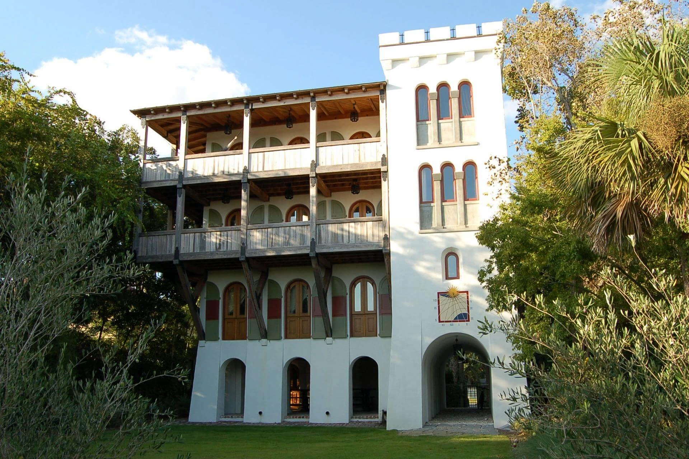

Places of enduring value
Our Projects
From new neighborhoods to beloved historic places, explore three ways we help shape the built environment.

New Neighborhoods
Walkable places designed around everyday life and lasting community.
Explore projects
Urban Restoration
Thoughtful infill and renewed public spaces within the existing city.
Explore projects
Historic Renovation
Historic buildings restored for a new chapter of use and stewardship.
Explore projects